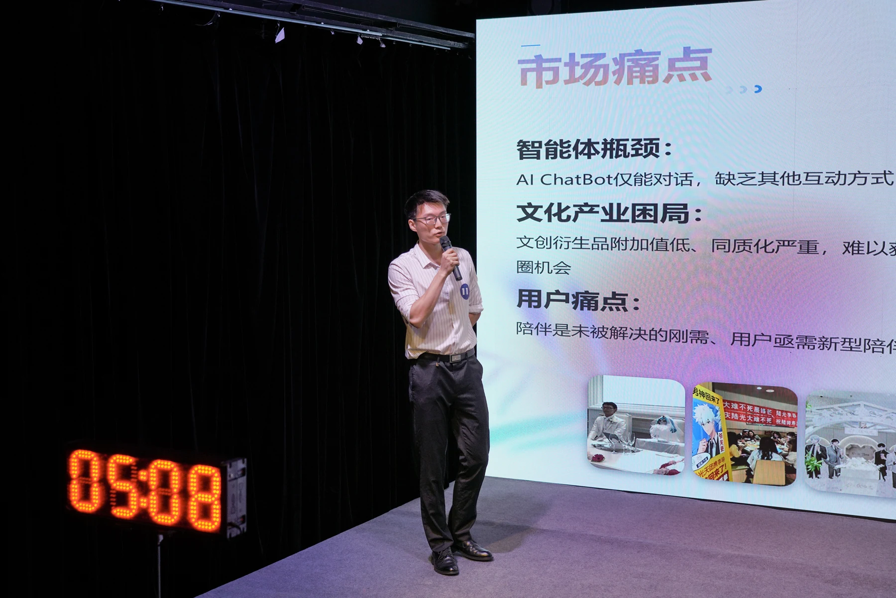
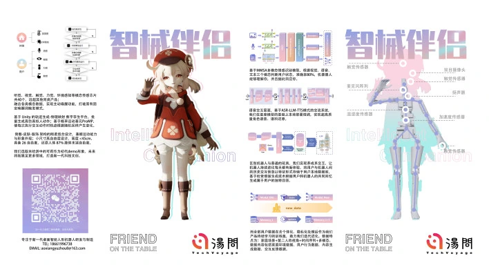
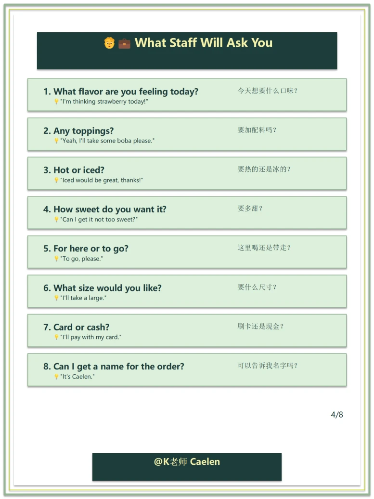
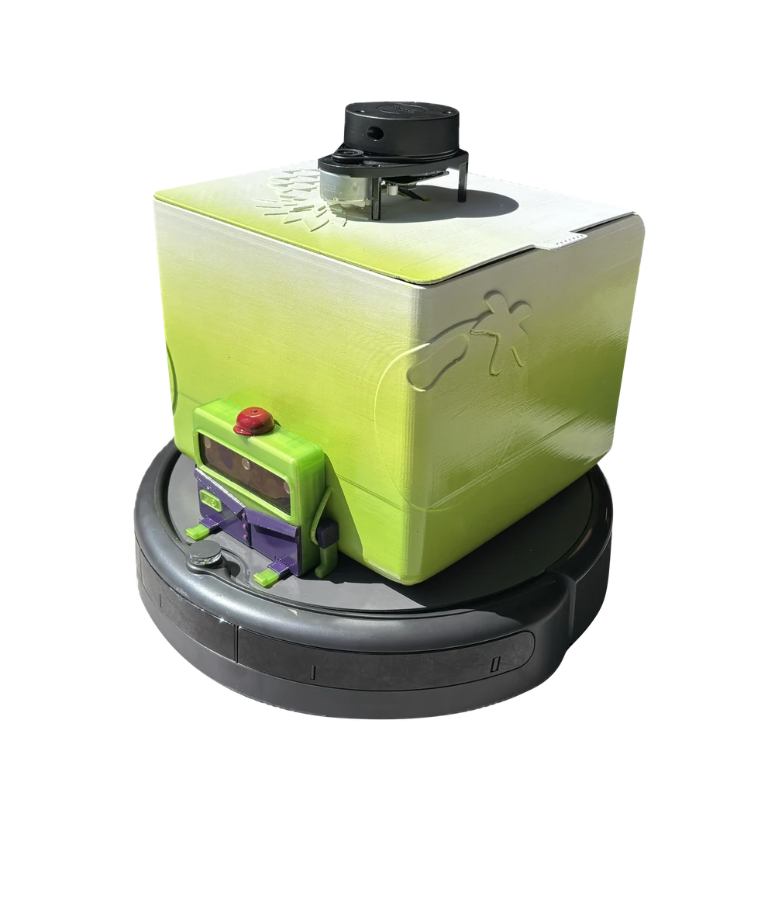
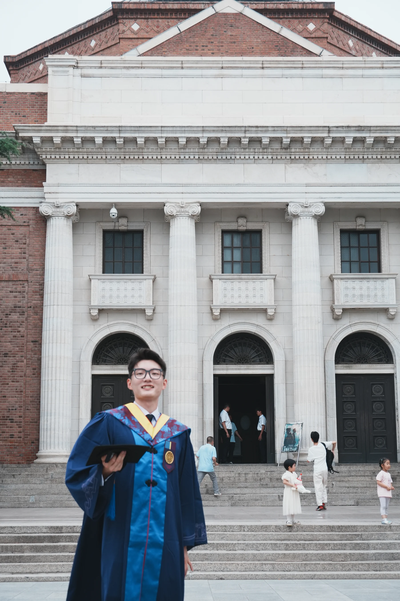
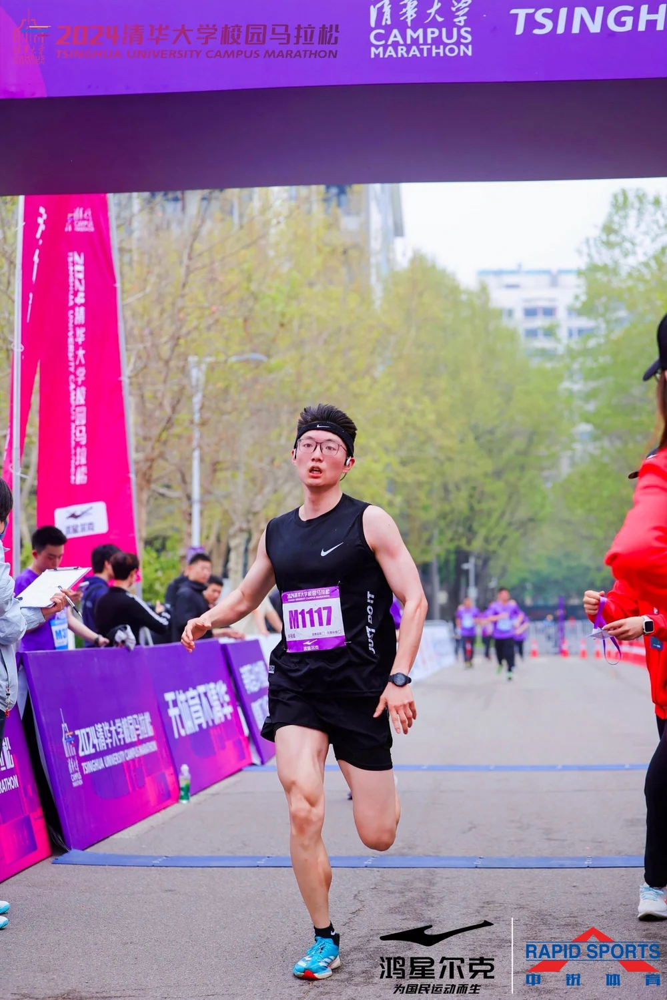

01
从需求到能力
洞察客户需求，转换为 Agent / Skill 开发项目。
产品人、AI 实践者与连续创业者。横跨 Agent、AI 硬件、机器人、设计与商业，把模糊需求推进为可验证、可交付、可增长的产品。
目前在阿里巴巴 Accio Work 团队，连接客户需求、Agent 能力与真实经营结果。
工作细节仍在持续沉淀，当前聚焦三个相互咬合的环节：定义、评测、落地。
洞察客户需求，转换为 Agent / Skill 开发项目。
测评 Agent / Skill 表现，沿 Bad Case 追到根因并治理。
优化数据 → AI 解释 → 商家消费 → 经营提效的完整工作流。
三段创业实践，分别落在具身智能、AI 内容工作流与消费级智能硬件。这里强调我真正承担的角色、推进的系统和留下的结果。


让 IP 手办成为可感知、会动作、能长期陪伴的桌面机器人。
产品负责人 · 项目管理者 · 路演主讲人 / 2023—2025
主导交互方案、动作库、IP 人格与语音体系，以及 PRD / MVP 定义；协调跨校研发、供应链与合作方，把技术能力推进到样机、路演和商业验证。

把镜面变成理解用户、提供美妆体验的智能硬件入口。
硬件创业项目 / 阶段资料整理中
在 HerOS 参与智能美妆镜硬件创业实践，围绕用户需求、产品定义、硬件原型与镜面交互体验展开探索。为避免过度包装，更多项目过程与阶段成果将在资料补齐后更新。
学生时代的建筑、数据、HCI、机器人与原型项目不再逐个堆砌；它们被重新组织为六种可迁移的能力，并持续服务于今天的产品工作。
访谈、场景观察、机会识别与需求优先级。
产品架构、信息设计、交互逻辑与跨团队语言。
从代码、智能体到硬件与空间，多介质快速验证。
评测、迭代、项目推进、路演与商业化。
点击打开原始案例 ↗

02Visual Diary CloudDATA · CODING · 2025↗ 03Frame FlowDIGITAL JOURNAL · 2025↗ 04X-WBTHCI · HARDWARE · 2024↗ 05GottaGoPRODUCT · PROTOTYPE · 2024↗ 06Hyper Student CityARCHITECTURE · 2023↗ 07MonolithCOMPUTATIONAL DESIGN · 2022↗ 08Bubble-VerseBUSINESS · URBAN IP · 2021↗

我是王城昊，也叫 Caelan。我的路径从建筑学的空间思维出发，经过数据科学、HCI 与机器人，最后汇入产品与创业。
这种看似跳跃的经历，训练了我在陌生领域快速建立模型的能力：先看人，再看系统；先抓关键矛盾，再决定用设计、代码、硬件还是组织协作去解。